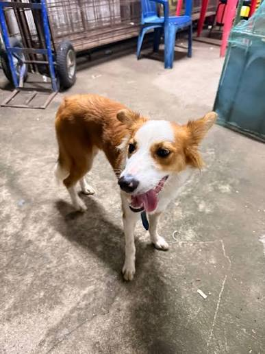
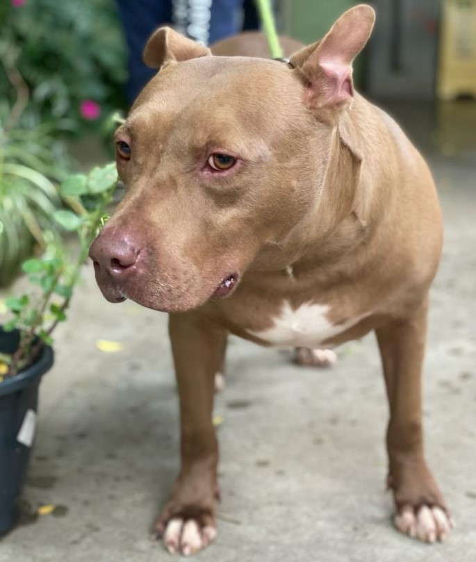
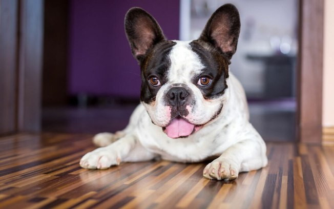

♡  Thor Cachorro · 2 anos · Porte médio Brincalhão, sociável e adora passear. Quero adotar
♡  Bruce Cachorro · 4 anos · Porte grande Dócil, protetor e ótimo com crianças. Quero adotar
♡  Filó Cachorro · 4 anos · Porte pequeno Companheira, alegre e muito carinhosa! Quero adotar